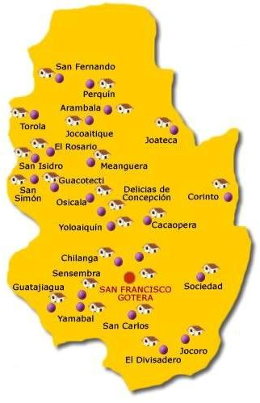

Morazán es un departamento de El Salvador ubicado en la zona oriental del país. Limita al Norte con la república de Honduras; al Sur y al Oeste con el departamento de San Miguel, y al Sur y al Este con el departamento de La Unión. Su cabecera departamental es San Francisco Gotera. Morazán comprende un territorio de 1 447 km² y cuenta con una población de 181 285 habitantes.
En el departamento todavía se conservan rastros de la presencia de los paleoindios —primeros pobladores de El Salvador— en la Cueva del Espíritu Santo, un sitio arqueológico con pinturas rupestres en las cercanías del municipio de Corinto. En la época previa a la conquista española, Morazán estuvo habitado por indígenas lencas. En la época colonial, el territorio estuvo subdivido en los partidos de Gotera y Osicala. Fue creado con el nombre de departamento de Gotera el 14 de julio de 1875, por disposición del presidente Santiago González. Por decreto de la Asamblea Legislativa recibió su nombre actual el 14 de marzo de 1887, en homenaje al unionista centroamericano general Francisco Morazán.
El departamento se encuentra en la parte nororiental de El Salvador. Su territorio se encuentra a una altitud de entre 500 y 1.000 metros sobre el nivel del mar y tiene una topografía relativamente accidentada. Entre las elevaciones más importantes se encuentran el Cerro El Pericón, cerca de la frontera con Honduras; y el Cerro Cacahuatique. La precipitación media anual en Morazán varía de entre 2.300 a 2.600 milímetros. Algunos ríos del departamento son el Torola, Tamarindo, Cañas, Yamabal y San Francisco, casi todos ellos pertenecen a la cuenca hidrográfica del Río Grande de San Miguel.
Morazán es junto con Cabañas y Chalatenango, uno de los departamentos más pobres de El Salvador. Como otras regiones que fueron afectadas por el conflicto bélico de la década de los años 1980, existe un importante número de familias receptoras de remesas familiares enviadas por parientes que se exiliaron durante la guerra. La economía de Morazán es predominantemente agrícola. En su territorio se cultiva caña de azúcar, café (en la zona de Joateca), henequén, aguacate, piñas y frutas cítricas. También es importante la crianza de ganado bovino y de aves de corral; así como la fabricación artesanal de sombreros de palma, objetos de tule y productos de henequén. En Guatajiagua existe la tradicional producción de ollas y comales de barro negro.